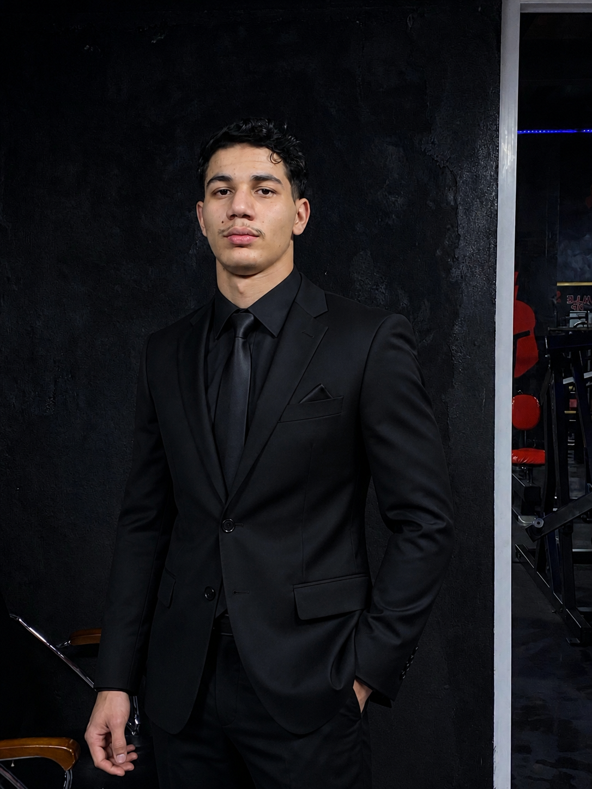

Aymen Laouedj

Summary
Master’s student in electronic and financial management with a strong interest in digital transformation, information systems, and financial control. Motivated, disciplined, and focused on developing practical skills in ERP, web technologies, and data-driven decision-making to support organizational performance.
Education & Formation
- Master 2 Managment Electronic.
- Licence Managment Financier.
- Training in Accounting, Taxation, Payroll & Accounting Software.
- Web devolopment full stack (Frontend - Backend)
Experience
- Costumer advicer in temtem company
- Algiers Internationale Airport Intern in the Finance and Accounting Department.
- Buyer in supermarket.
- Worker at coffee grinder.
Skills
- Frontend & Backend Web Devolopment
- HTML,CSS,JAVASCRIPT,SQL - SPSS
- Word,Excel,PowerPoint,Microsoft Acces
- Effective Communication
- Team Work